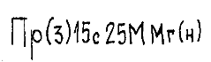
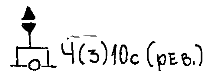
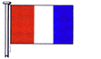
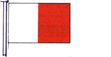
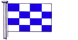
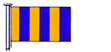

| 201. Нанесеното съкращение в акваторията на българска морска карта "П" означава: |
|
плитчина потънал под водата кораб пясък подводно препятствие |
| 202. Нанесеното съкращение в акваторията на българска морска карта "Р"означава: |
|
местообитание на рапани раковини обичайно място за струпване на риба обичайно място за струпване на раци |
| 203. Нанесеното съкращение в акваторията на българска морска карта "ТР" означава: |
|
рядка тиня подводно препятствие временно място за струпване на риба тиня и раковини |
| 204. Нанесеното съкращение "РФ" при навигационна светлина на българска морска карта означава: |
|
пасивен радиолокационен отражател на фар активен радиолкационен отражател на фар секторен радиофар радиофар |
| 205. Нанесеното съкращение на българска морска карта означава:  |
|
навигационен знак, пробляскващ 3 пъти за 15 сек. с далечина на видимост 25 мили, подаващ сигнал за мъгла - буквата "Н" фар пробляскващ 15 пъти за 3 сек. С далечина на видимост 25 метра фар, затъмняващ 3 пъти за 15 сек., с далечина на видимост 25 мили и мегафон фар, светещ постоянно с зелена светлина, далечина на видимост 25 мили и подаващ сигнал за мъгла - буквата "н" с мегафон |
| 206. Нанесеният знак и съкращения на българска морска карта означава:  |
|
западен буй, пробляскващ 3 пъти за 10 сек. С зелена светлина, оборудван с ревун източен буй, често пробляскващ 3 пъти за 10 сек. бял оборудван с ревун източен буй, пробляскващ 3 пъти за 10 сек. С зелена светлина, оборудван с ревун източен буй, често пробляскващ през за 10 сек. С зелена светлина, оборудван с ревун |
| 207. Показаният флаг означава:  |
|
Флаг "А" - товаря, разтоварвам опасен товар Флаг "Т" - не пресичайте моя курс / не минавайте по носа ми Флаг "В" - товаря / разтоварвам опасен товар Флаг "M" - на борда си имам лекар |
| 208. Показаният флаг означава:  |
|
Флаг "С" - Да, утвърдителен Флаг "Н" - имам пилот на борда Флаг "В" - товаря / разтоварвам опасен товар Флага "U -Вие отивате към опасност |
| 209. Показаният флаг означава:  |
|
Флаг "А" - товаря, разтоварвам опасен товар Флаг "С" - Да, утвърдителен Флаг "N" - не, отрицание Флаг "M" - на борда си имам лекар |
| 210. Показаният флаг означава:  |
|
Флаг "А" - товаря, разтоварвам опасен товар Флаг "Н" - имам пилот на борда Флаг "N" - не, отрицание Флаг "G" - искам пилот |